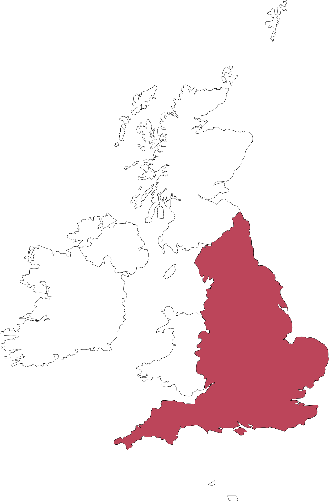
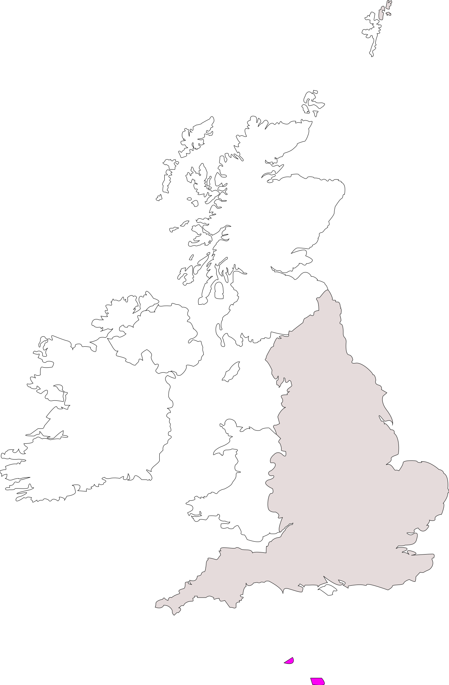
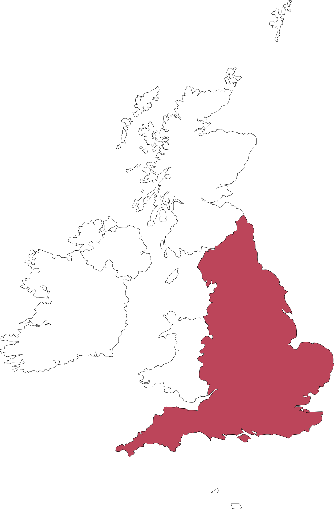
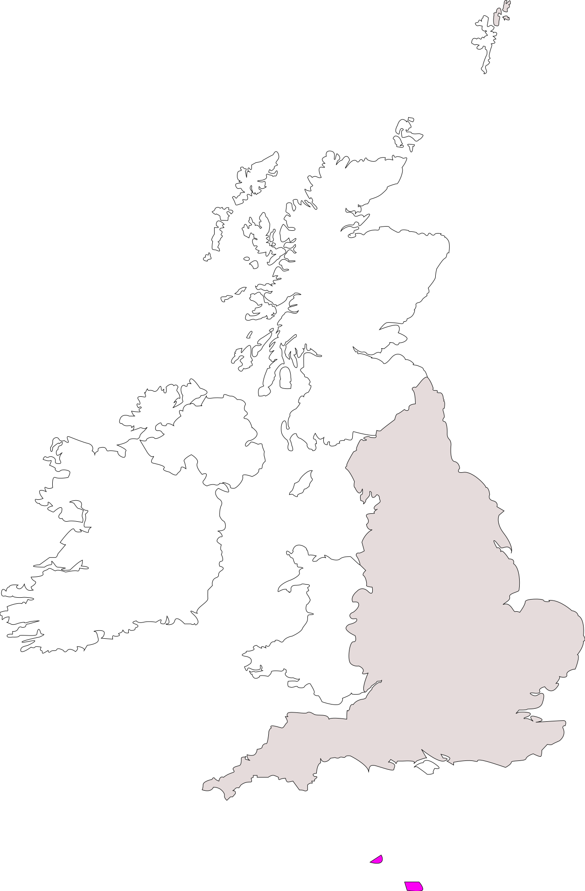
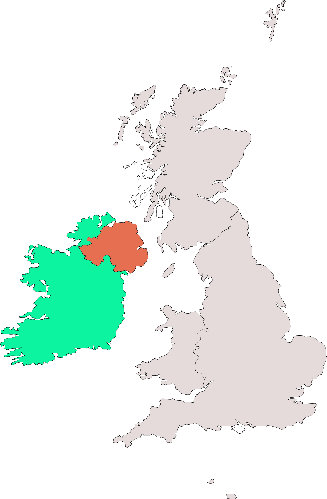
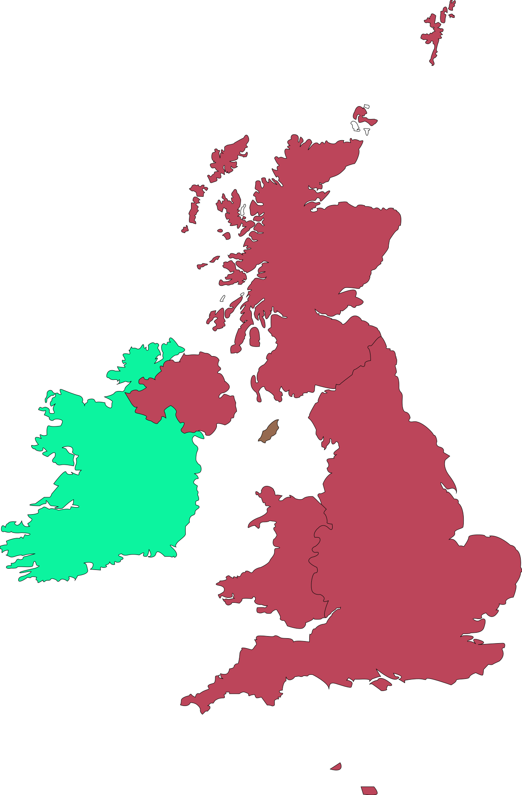
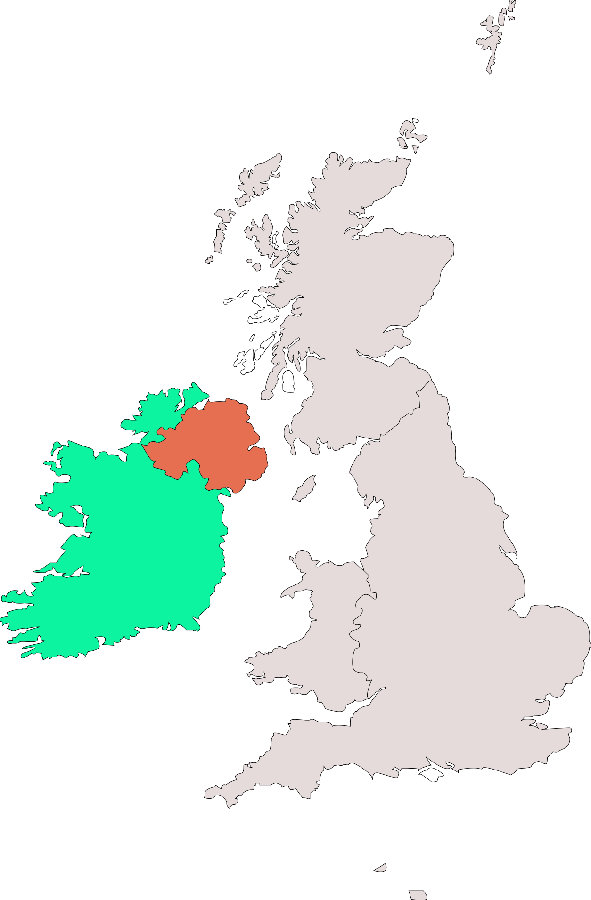
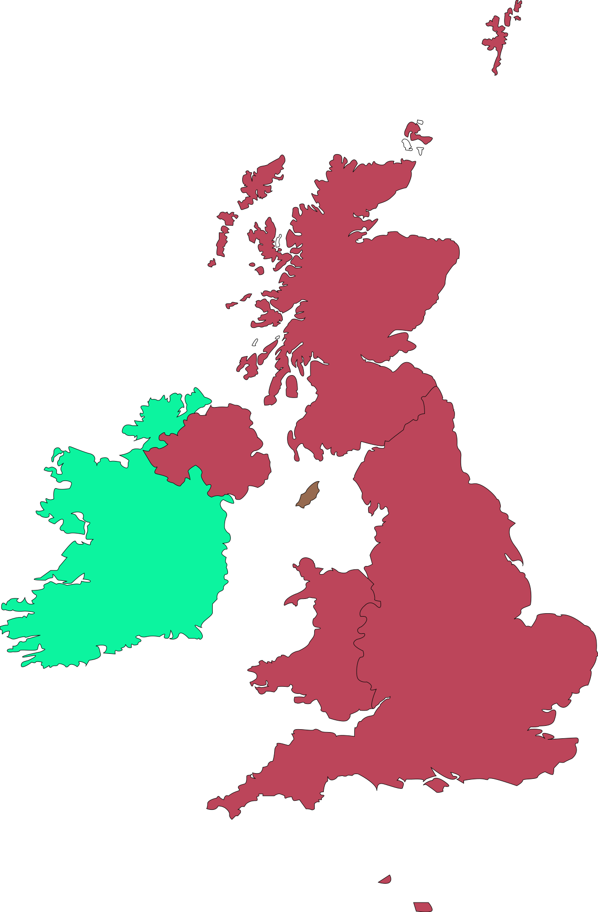

Завоювання Нормандії французами (1204) Англія втратила Нормандію, але зберегла острови
Завоювання Нормандії французами (1204) Англія втратила Нормандію, але зберегла острови
 





 



(Велика Британія та Ірландія)